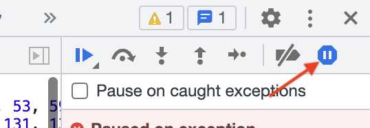

Abra o DevTools para encontrar uma senha secreta.
Mac: Cmd-Option-i
Windows/Linux: Ctrl-Shift-i
Depois, atualize a página.
Se o depurador pausar sem mostrar o código correto, clique na primeira
entrada da Pilha de Chamadas para ir até onde ele realmente pausou. Isso
geralmente acontece só na primeira vez que pausamos em uma determinada
página.
Para esta página especificamente, certifique-se de ativar a opção "Pausar
em exceções", depois atualize a página novamente.
